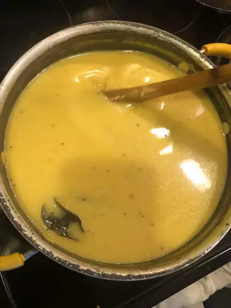

Gujarati Kadhi

Description
Gujarati Kadhi is a traditional Gujarati preparation of a wonderful
sweet and spicy curd mixture thickened with besan (gram flour). It's
a very popular Gujarati dish made from buttermilk or dahi (yogurt)
and gram flour. This easy variant of kadhi is made without gram
flour fritters (pakoda). It makes for a quick comforting lunch or
dinner paired with a side of steamed basmati rice or roti.
The dish gets its name “Kadhi” as it is a yogurt-based gravy dish to
which gram flour (besan) is added, tempered and then simmered with
spices. The addition of gram flour helps to thicken and also
prevents the curd from separating or splitting while cooking. It
also adds a creamy consistency.
Gujaratis like their kadhi usually slightly sweet and spicy. The
combination of spices used for tempering is different than Pakoray
wali Kadhi and Rajasthani Kadhi. We do not add fritters (Pakora) to
our kadhi. Instead, we make it sweet and spicy by adding jaggery,
green chili, and ginger.
Ingredients
- 4 cups water
- 2 cups plain yogurt
- 2 tablespoons chickpea flour (besan)
- 4 green chile peppers, halved lengthwise
- 1 tablespoon minced fresh ginger root
- 1 tablespoon white sugar, or to taste
- ½ teaspoon ground turmeric
- salt to taste
- ¼ cup chopped cilantro leaves
Tadka:
- 1 tablespoon vegetable oil
- 1 tablespoon ghee
- 2 dried red chile peppers, broken into pieces
- 1 sprig fresh curry leaves
- ½ teaspoon cumin seeds
- ½ teaspoon mustard seed
- 1 pinch asafoetida powder
Steps
- Mix together water, yogurt, and chickpea flour in a large saucepan until smooth; add green chile peppers, ginger, sugar, turmeric, and salt.
- Bring to a boil, then immediately reduce heat to low and simmer for 5 to 10 minutes.
- Make tadka: Heat together oil and ghee in a small skillet over medium heat.
- Fry dried red chile peppers, curry leaves, cumin seeds, mustard seed, and asafetida powder in hot oil-ghee mixture until seeds splutter.
- Stir tadka into yogurt mixture in the saucepan. Mix in cilantro and serve hot.